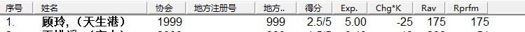
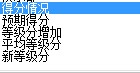

咨询肖总
#1 咨询肖总作者：黄药师 发表时间：2012-2-6 18:47:03

请问最后5项目分别是指什么？从得分开始起
#2 Re:咨询肖总作者：黄药师 发表时间：2012-2-6 18:50:56

翻了一下sp98 是不是指着几个，能具体说说嘛？
#3 Re:咨询肖总作者：我是裁判 发表时间：2012-2-6 19:11:59
这个是SP98等级分计算的附加功能。在正常的使用中没有意义。其中包括得分率、预期得分率、平均等级分等项目。但因为其在计算等级分时K值无法单独设置，因此对我们没什么意义［此帖子已被 我是裁判 在 2012-2-6 19:18:37 编辑过］
［ 黄药师 于 2012-2-9 13:21:06 时花20金币送鲜花一朵］
#4 Re:咨询肖总作者：黄民城 发表时间：2012-2-8 20:11:40
嗯！肖老师说的没错，实际适用的意义不大。
如果你们拥有选手自己的个人积分的话，不妨输入进去。比赛结束后，通过最后一项的分值看该选手在本次比赛中的表现是什么状态。
［ 黄药师 于 2012-2-9 13:21:15 时花20金币送鲜花一朵］
#5 Re:咨询肖总作者：黄药师 发表时间：2012-2-9 13:22:10
就是想给学生进行一下模拟等级分试试，另外那个k值一般设置多少比较好？10是默认的！